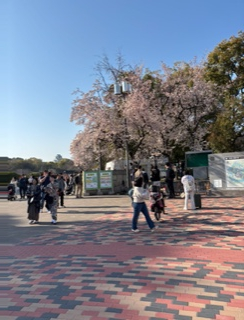
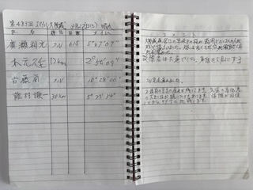

2025-03-22 04:20:29
2025年3月22日（土） 大阪城公園 天候 : 晴れ 担当 : 廣瀬利光
| No. | 氏名 | 種目 | 回数 | タイム | フル百 |
|---|---|---|---|---|---|
| 1 | 廣瀬 利光 | フル | 611回 | 5:47:07 | 846 |
| 2 | 吉藤 尚 | フル | - | 10:28:00 | 192 |
| 3 | 藤村 謙一 | 30km | - | 5:23:34 | 126 |
| 4 | 木元 久生 | 12km | - | 2:50:09 | 606 |
吉藤さんが遠方より参加されました。公園内は桃園が満開で大勢の人が写真撮影
でした。天気も良く春の陽気で桜はまだ咲いてませんが大勢の外国観光客も訪れていました。
次回は満開になるでしよう。2名がフル完走しました。

